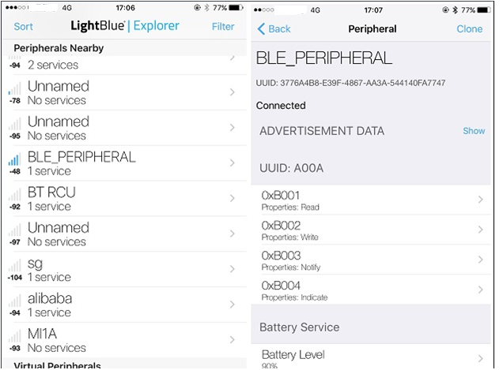

LE Peripheral
The ble_peripheral sample demonstrates how to use the LE GAP Peripheral role to develop many different peripheral-role based applications.
LE Peripheral role features:
Can send connectable advertising events.
Can accept the establishment of LE link and become a Peripheral role in the link.
Requirements
The sample supports the following development kits:
Hardware Platforms |
Board Name |
|---|---|
RTL87x2G HDK |
RTL87x2G EVB |
To quickly set up the development environment, please refer to the detailed instructions provided in Quick Start.
Wiring
For specific wiring instructions, please refer to EVB Interfaces and Modules in Quick Start.
Configurations
Configurable Items
All contents that can be configured for the sample are in
samples\bluetooth\ble_peripheral\src\app_flags.h,
developers can configure according to actual needs.
/** @brief Config APP LE link number */
#define APP_MAX_LINKS 1
/** @brief Config DLPS: 0-Disable DLPS, 1-Enable DLPS */
#define F_BT_DLPS_EN 0
/** @brief Config ANCS Client: 0-Not built in, 1-Open ANCS client function */
#define F_BT_ANCS_CLIENT_SUPPORT 0
#define F_BT_ANCS_APP_FILTER (F_BT_ANCS_CLIENT_SUPPORT & 1)
#define F_BT_ANCS_GET_APP_ATTR (F_BT_ANCS_CLIENT_SUPPORT & 0)
/** @brief Config ANCS Client debug log: 0-close, 1-open */
#define F_BT_ANCS_CLIENT_DEBUG (F_BT_ANCS_CLIENT_SUPPORT & 0)
Developers can open or close the ANCS Client Module through the macro F_BT_ANCS_CLIENT_SUPPORT. For more information about the ANCS Module, please refer to ANCS Client.
Generating System Config File
Developers shall configure the following items through MP Tool:
Configurable Item |
Value |
|---|---|
LE Slave Link Num |
≥ APP_MAX_LINKS |
For more information about MP Tool Configuration, please refer to Generating System Config File in Quick Start.
Building and Downloading
This sample can be found in the SDK folder:
Project file: samples\bluetooth\ble_peripheral\proj\rtl87x2g\mdk
Project file: samples\bluetooth\ble_peripheral\proj\rtl87x2g\gcc
To build and run the sample, follow the steps listed below:
Open project file.
To build the target, follow the steps listed on the Generating App Image in Quick Start.
After a successful compilation, the APP bin
app_MP_sdk_xxx.binwill be generated in the directorysamples\bluetooth\ble_peripheral\proj\rtl87x2g\mdk\bin.To download APP bin into EVB, follow the steps listed on the MP Tool Download in Quick Start.
Press the reset button on the EVB and it will start running.
Experimental Verification
After downloading the sample bin to the EVB, developers can test it either by using another
kit that is running the LE Central sample, or a phone installed LE APPs like LightBlue.
Testing with Another Kit
Please refer to Testing with Another Kit in LE Central.
Testing with Phone
Press the reset button on DUT and DUT will start sending connectable undirected advertising events.
If the advertisement is successfully enabled, the following Debug Analyzer log will be printed. If developers do not see the following log, it means that the advertisement failed to start. Please check if the software and hardware environment is configured correctly.
[APP] !**GAP adv start
Run
LightBlueon an iOS device to search for and connect with DUT, as shown below:
ble_peripheral Test with iOS Device
Developers can implement actions like scanning, connecting, pairing, discovering services, deleting bond information, disconnecting, etc., on the phone-end.
{kind=link}
Code Overview
The main purpose of this chapter is to help developers become familiar with the development process related to the Peripheral Role. This chapter will be introduced according to the following several parts:
The directories of the project and source code files will be introduced in chapter Source Code Directory.
The Bluetooth Host will be introduced in chapter Bluetooth Host Overview.
The main function and configurable GAP parameters of this sample will be introduced in chapter Initialization.
The GAP message handler of this sample will be introduced in chapter GAP Message Handler.
The profile message callback of this sample will be introduced in chapter Profile Message Callback.
The ANCS client module will be introduced in chapter ANCS Client.
Source Code Directory
Project directory:
samples\bluetooth\ble_peripheral\proj.Source code directory:
samples\bluetooth\ble_peripheral\src.
Source files in the ble_peripheral sample project are currently categorized into several groups as below.
└── Project: peripheral
└── secure_only_app
└── Device includes startup code
├── CMSE Library Non-secure callable lib
├── Lib includes all binary symbol files that user application is built on
├── ROM_NS.lib
└── lowerstack.lib
└── rtl87x2g_sdk.lib
└── gap_utils.lib
├── Peripheral includes all peripheral drivers and module code used by the application
├── Profile includes LE profiles or services used by the sample application
└── APP includes the ble_peripheral user application implementation
├── ancs.c
├── app_task.c
├── main.c
└── peripheral_app.c
The sample uses default GAP LIB that matches with bt_host_0_0, please refer to Usage of GAP LIB in Host Image for more information.
Bluetooth Host Overview
The sample uses default Bluetooth Host image in bt_host_0_0, please refer to Host Image for more information.
For details of Bluetooth technology features supported by the Bluetooth Host, please refer to the file
bin\rtl87x2g\bt_host_image\bt_host_0_0\bt_host_config.h.
Initialization
main() function is invoked when the EVB is powered on and the chip is reset,
and it performs the following initialization functions:
int main(void)
{
board_init();
le_gap_init(APP_MAX_LINKS);
gap_lib_init();
app_le_gap_init();
app_le_profile_init();
pwr_mgr_init();
task_init();
os_sched_start();
return 0;
}
le_gap_init()function is used to initialize GAP and configure link number.app_le_profile_init()function is used to initialize the profile.app_le_gap_init()function is used to initialize the GAP parameters. Developers can configure the following parameters: Device name and device appearance, Advertising parameters, GAP Bond Manager parameters (please refer to the chapter Configure Device Name and Device Appearance, chapter Configure Advertising Parameters, chapter Configure Bond Manager Parameters of LE Host).
void app_le_gap_init(void)
{
/* Device name and device appearance */
......
/* Advertising parameters */
......
/* GAP Bond Manager parameters */
......
/* Set advertising parameters */
le_adv_set_param(GAP_PARAM_ADV_EVENT_TYPE, sizeof(adv_evt_type), &adv_evt_type);
le_adv_set_param(GAP_PARAM_ADV_DIRECT_ADDR_TYPE, sizeof(adv_direct_type), &adv_direct_type);
le_adv_set_param(GAP_PARAM_ADV_DIRECT_ADDR, sizeof(adv_direct_addr), adv_direct_addr);
le_adv_set_param(GAP_PARAM_ADV_CHANNEL_MAP, sizeof(adv_chann_map), &adv_chann_map);
le_adv_set_param(GAP_PARAM_ADV_FILTER_POLICY, sizeof(adv_filter_policy), &adv_filter_policy);
le_adv_set_param(GAP_PARAM_ADV_INTERVAL_MIN, sizeof(adv_int_min), &adv_int_min);
le_adv_set_param(GAP_PARAM_ADV_INTERVAL_MAX, sizeof(adv_int_max), &adv_int_max);
le_adv_set_param(GAP_PARAM_ADV_DATA, sizeof(adv_data), (void *)adv_data);
le_adv_set_param(GAP_PARAM_SCAN_RSP_DATA, sizeof(scan_rsp_data), (void *)scan_rsp_data);
/* Setup the GAP Bond Manager */
gap_set_param(GAP_PARAM_BOND_PAIRING_MODE, sizeof(auth_pair_mode), &auth_pair_mode);
gap_set_param(GAP_PARAM_BOND_AUTHEN_REQUIREMENTS_FLAGS, sizeof(auth_flags), &auth_flags);
gap_set_param(GAP_PARAM_BOND_IO_CAPABILITIES, sizeof(auth_io_cap), &auth_io_cap);
gap_set_param(GAP_PARAM_BOND_OOB_ENABLED, sizeof(auth_oob), &auth_oob);
le_bond_set_param(GAP_PARAM_BOND_FIXED_PASSKEY, sizeof(auth_fix_passkey), &auth_fix_passkey);
le_bond_set_param(GAP_PARAM_BOND_FIXED_PASSKEY_ENABLE, sizeof(auth_use_fix_passkey),
&auth_use_fix_passkey);
le_bond_set_param(GAP_PARAM_BOND_SEC_REQ_REQUIREMENT, sizeof(auth_sec_req_flags),
&auth_sec_req_flags);
/* register gap message callback */
le_register_app_cb(app_gap_callback);
}
A device in the peripheral mode shall send connectable advertising events. Therefore, the parameter adv_evt_type should be configured as the following type: GAP_ADTYPE_ADV_IND.
More information on LE GAP initialization and startup flow can be found in the chapter GAP Parameters Initialization of LE Host.
GAP Message Handler
app_handle_gap_msg() function is invoked whenever a GAP message is received from the Bluetooth Host.
More information on GAP messages can be found in the chapter Bluetooth LE GAP Message of LE Host.
void app_handle_gap_msg(T_IO_MSG *p_gap_msg)
{
T_LE_GAP_MSG gap_msg;
uint8_t conn_id;
memcpy(&gap_msg, &p_gap_msg->u.param, sizeof(p_gap_msg->u.param));
APP_PRINT_TRACE1("app_handle_gap_msg: subtype %d", p_gap_msg->subtype);
switch (p_gap_msg->subtype)
{
case GAP_MSG_LE_DEV_STATE_CHANGE:
{
app_handle_dev_state_evt(gap_msg.msg_data.gap_dev_state_change.new_state,
gap_msg.msg_data.gap_dev_state_change.cause);
}
break;
......
default:
APP_PRINT_ERROR1("app_handle_gap_msg: unknown subtype %d", p_gap_msg->subtype);
break;
}
}
ble_peripheral sample will call le_adv_start() to start advertising when receiving GAP_INIT_STATE_STACK_READY.
If le_adv_start() returns true, it means Bluetooth Host has already received this command and is ready to execute. When this command
execution completes, Bluetooth Host will send GAP_ADV_STATE_ADVERTISING to app_handle_dev_state_evt().
When ble_peripheral sample runs on the EVB, the device will send connectable advertising events and can be scanned and connected as a Peripheral role by a remote device.
void app_handle_dev_state_evt(T_GAP_DEV_STATE new_state, uint16_t cause)
{
APP_PRINT_INFO3("app_handle_dev_state_evt: init state %d, adv state %d, cause 0x%x",
new_state.gap_init_state, new_state.gap_adv_state, cause);
if (gap_dev_state.gap_init_state != new_state.gap_init_state)
{
if (new_state.gap_init_state == GAP_INIT_STATE_STACK_READY)
{
APP_PRINT_INFO0("GAP stack ready");
/*stack ready*/
le_adv_start();
}
}
if (gap_dev_state.gap_adv_state != new_state.gap_adv_state)
{
if (new_state.gap_adv_state == GAP_ADV_STATE_IDLE)
{
APP_PRINT_INFO0("GAP adv stoped");
}
else if (new_state.gap_adv_state == GAP_ADV_STATE_ADVERTISING)
{
APP_PRINT_INFO0("GAP adv start");
}
}
gap_dev_state = new_state;
}
When the ble_peripheral sample receives the GAP_CONN_STATE_DISCONNECTED message, it will call the le_adv_start() function again to start advertising.
After disconnecting, the ble_peripheral sample will be restored to the status that is discoverable and connectable again.
void app_handle_conn_state_evt(uint8_t conn_id, T_GAP_CONN_STATE new_state, uint16_t disc_cause)
{
APP_PRINT_INFO4("app_handle_conn_state_evt: conn_id %d old_state %d new_state %d, disc_cause 0x%x",
conn_id, gap_conn_state, new_state, disc_cause);
switch (new_state)
{
case GAP_CONN_STATE_DISCONNECTED:
{
if ((disc_cause != (HCI_ERR | HCI_ERR_REMOTE_USER_TERMINATE))
&& (disc_cause != (HCI_ERR | HCI_ERR_LOCAL_HOST_TERMINATE)))
{
APP_PRINT_ERROR1("app_handle_conn_state_evt: connection lost cause 0x%x", disc_cause);
}
le_adv_start();
}
break;
......
}
}
Profile Message Callback
When APP uses xxx_add_service to register a specific service, the APP shall register the callback function to handle the message from the specific service.
APP shall call server_register_app_cb() to register the callback function used to handle the message from the profile server layer.
APP can register different callback functions to handle different services or register the general callback function to handle all messages from specific services and profile server layer.
app_profile_callback() function is the general callback function. app_profile_callback() can distinguish different services by service ID.
void app_le_profile_init(void)
{
server_init(2);
simp_srv_id = simp_ble_service_add_service(app_profile_callback);
bas_srv_id = bas_add_service(app_profile_callback);
server_register_app_cb(app_profile_callback);
}
More information can be found in the chapter GATT Profile Server of LE Host.
General profile server callback
SERVICE_PROFILE_GENERAL_IDis the service ID used by the profile server layer. Message used by the profile server layer contains two message types:-
This message is used to inform that the service registration process has been completed in GAP Start Flow.
PROFILE_EVT_SEND_DATA_COMPLETEThis message is used to inform the result of sending the notification or indication.
T_APP_RESULT app_profile_callback(T_SERVER_ID service_id, void *p_data) { T_APP_RESULT app_result = APP_RESULT_SUCCESS; if (service_id == SERVICE_PROFILE_GENERAL_ID) { T_SERVER_APP_CB_DATA *p_param = (T_SERVER_APP_CB_DATA *)p_data; switch (p_param->eventId) { case PROFILE_EVT_SRV_REG_COMPLETE:// srv register result event. APP_PRINT_INFO1("PROFILE_EVT_SRV_REG_COMPLETE: result %d", p_param->event_data.service_reg_result); break; case PROFILE_EVT_SEND_DATA_COMPLETE: ...... break; ...... }
-
- Battery Service
bas_srv_idis the service ID of the battery service.T_APP_RESULT app_profile_callback(T_SERVER_ID service_id, void *p_data) { T_APP_RESULT app_result = APP_RESULT_SUCCESS; ...... else if (service_id == bas_srv_id) { T_BAS_CALLBACK_DATA *p_bas_cb_data = (T_BAS_CALLBACK_DATA *)p_data; switch (p_bas_cb_data->msg_type) { case SERVICE_CALLBACK_TYPE_INDIFICATION_NOTIFICATION: ...... }
- Simple LE Service
simp_srv_idis the service ID of simple LE service.T_APP_RESULT app_profile_callback(T_SERVER_ID service_id, void *p_data) { T_APP_RESULT app_result = APP_RESULT_SUCCESS; ...... else if (service_id == simp_srv_id) { TSIMP_CALLBACK_DATA *p_simp_cb_data = (TSIMP_CALLBACK_DATA *)p_data; switch (p_simp_cb_data->msg_type) { case SERVICE_CALLBACK_TYPE_INDIFICATION_NOTIFICATION: ...... }
ANCS Client
ANCS routines are defined in ancs.c and ancs.h. If other applications want to access this function, the procedure is shown as below:
Copy
ancs.handancs.cto the target APP directory.Configure parameter
auth_sec_req_enabletotrue.void app_le_gap_init(void) { #if F_BT_ANCS_CLIENT_SUPPORT uint8_t auth_sec_req_enable = true; #else uint8_t auth_sec_req_enable = false; #endif uint16_t auth_sec_req_flags = GAP_AUTHEN_BIT_BONDING_FLAG; ...... }
Initialize ANCS client in
app_le_profile_init().void app_le_profile_init(void) { ...... #if F_BT_ANCS_CLIENT_SUPPORT client_init(1); ancs_init(APP_MAX_LINKS); #endif }
Start ANCS discovery when authentication procedure is completed.
void app_handle_authen_state_evt(uint8_t conn_id, uint8_t new_state, uint16_t cause) { ...... case GAP_AUTHEN_STATE_COMPLETE: { if (cause == GAP_SUCCESS) { #if F_BT_ANCS_CLIENT_SUPPORT ancs_start_discovery(conn_id); #endif APP_PRINT_INFO0("app_handle_authen_state_evt: GAP_AUTHEN_STATE_COMPLETE pair success"); } else { APP_PRINT_INFO0("app_handle_authen_state_evt: GAP_AUTHEN_STATE_COMPLETE pair failed"); } } break; ...... }
Customize the ANCS routines in
ancs.c.
Troubleshooting
How to Modify the Parameters of Advertising Data?
The advertising data are defined in the following array adv_data, and developers can directly modify the content of the array to modify the advertising data.
static const uint8_t adv_data[] = { /* Flags */ 0x02, /* length */ GAP_ADTYPE_FLAGS, /* type="Flags" */ GAP_ADTYPE_FLAGS_LIMITED | GAP_ADTYPE_FLAGS_BREDR_NOT_SUPPORTED, /* Service */ 0x03, /* length */ GAP_ADTYPE_16BIT_COMPLETE, LO_WORD(GATT_UUID_SIMPLE_PROFILE), HI_WORD(GATT_UUID_SIMPLE_PROFILE), /* Local name */ 0x0F, /* length */ GAP_ADTYPE_LOCAL_NAME_COMPLETE, 'B', 'L', 'E', '_', 'P', 'E', 'R', 'I', 'P', 'H', 'E', 'R', 'A', 'L', };
See Also
Please refer to the relevant API Reference: